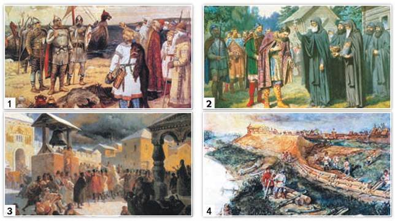

• Прочитайте перечень из четырёх событий и выполните задания, относящиеся к этому перечню.
Перечень событий (процессов)
1. Каждая из иллюстраций, приведённых ниже, относится к одному из указанных в перечне событий. Установите соответствие между событиями и иллюстрациями: к каждому событию подберите по одной иллюстрации. Ответ запишите в таблицу.

2. С каким из данных событий (процессов) связано слово «посадник»? Запишите букву, которой обозначено данное событие (процесс). Объясните смысл слова «посадник».
3. Укажите две исторические личности, которые были непосредственно связаны с распространением христианства на Руси и крещением её жителей. Укажите одно любое действие каждой из этих личностей, в значительной степени повлиявшее на ход распространения христианства на Руси и крещения её жителей.
1 Задания данного раздела выполняйте в тетради.